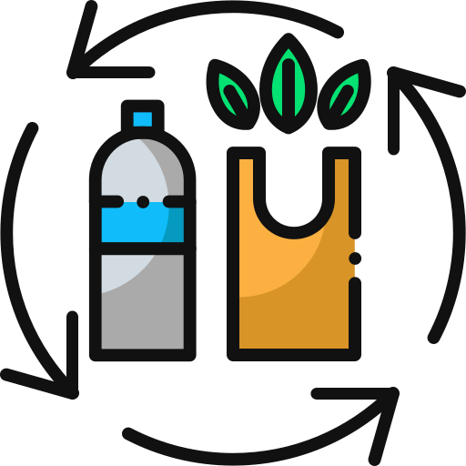

 Reutilizar
Es darle mayor utilidad a las cosas sin la necesidad de destruirlas. Muchos productos pueden ser usados varias veces, extendiendo su vida útil. Hay que tenerlos en cuenta cuando hacemos las compras, ya que esto hace que generemos menos residuos.Por ejemplo, utilizar envases retornables.
 Reducir
Reducir